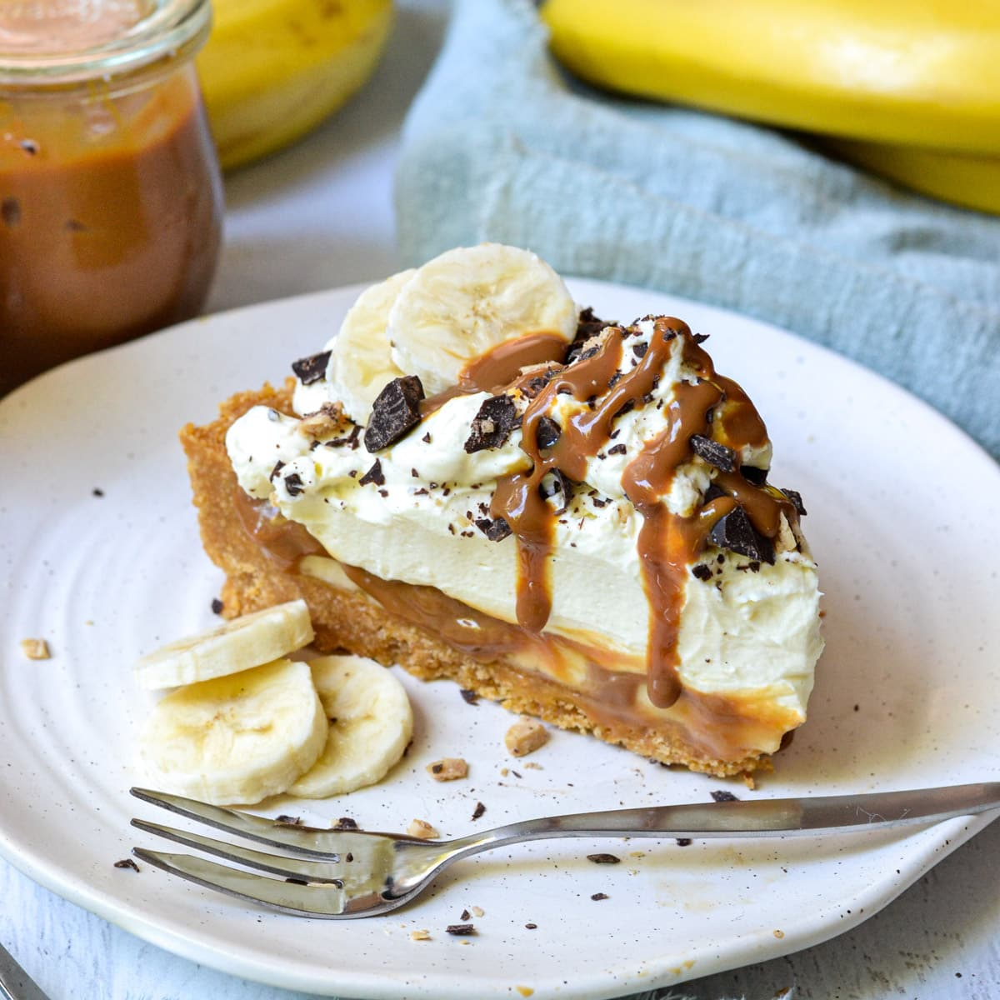
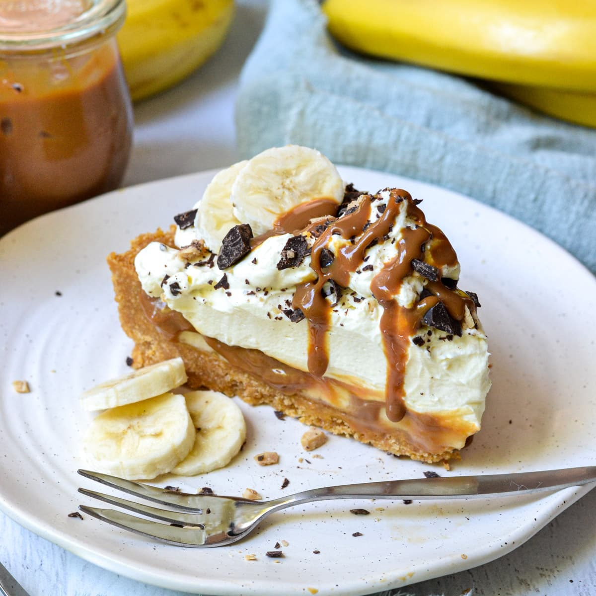

Back
แบบฝึกหัด 2: Basic HTML
6440011026 น.ส.วรรษมน เพ็ชรมณี
BANOFFEE PIE
 
\

\
This is the best quick banoffee pie ever!! A firm family favourite and super quick to make last minute for unexpected guests :)
Ingredients
Digestive biscuits, crushed 250g
Butter, melted 100g
Carnation Caramel 397g
Bananas 2
Carton whipping cream, whipped to soft peaks 300ml
Grated chocolate to sprinkle 300ml
loose-bottomed cake tin 20cm
Method
- Put the crushed biscuits into a bowl with the melted butter. Mix it together thoroughly, then press the mixture into the base and sides of the tin. Chill for 30 minutes in the fridge.
- Simply spoon the caramel from the tin into the base and spread gently to the edges. There’s no need to beat the caramel first.
- Remove the pie base from the tin. Slice the bananas and scatter them over the caramel. Top with the softly whipped cream. For the perfect finishing touch, dust with cocoa powder or use grated chocolate to decorate the banoffee pie. Chill until ready to serve.
Nutrition Facts
| Servings : 2 |
| Amount per serving |
| Calories |
650 |
|
% Daily Value |
| Total Fat 29g |
37% |
| Saturated Fat 14.12g |
71% |
| Cholesterol 75mg |
25% |
| Sodium 290mg |
13% |
| Total Carbohydrate 93g |
34% |
| Dietary Fiber 2g |
7% |
| Total Sugars 62g |
| Includes 0g Added Sugars |
0% |
| Protein 8g |
16% |